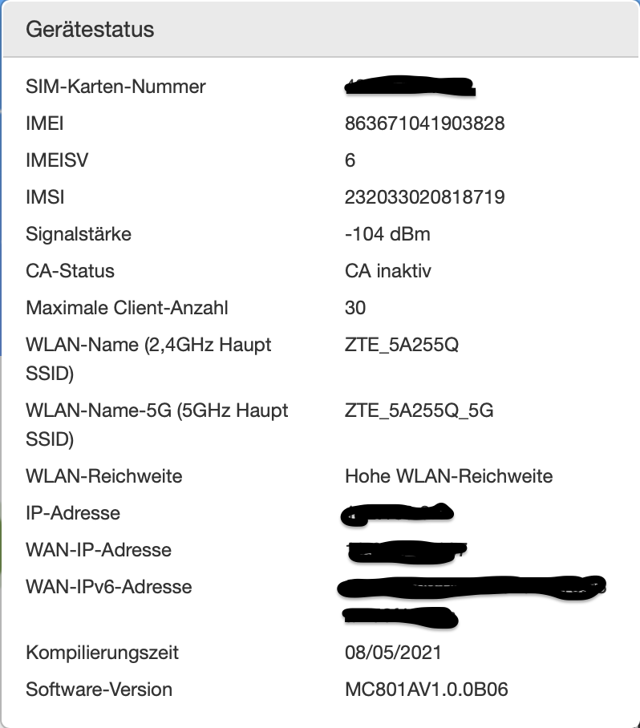
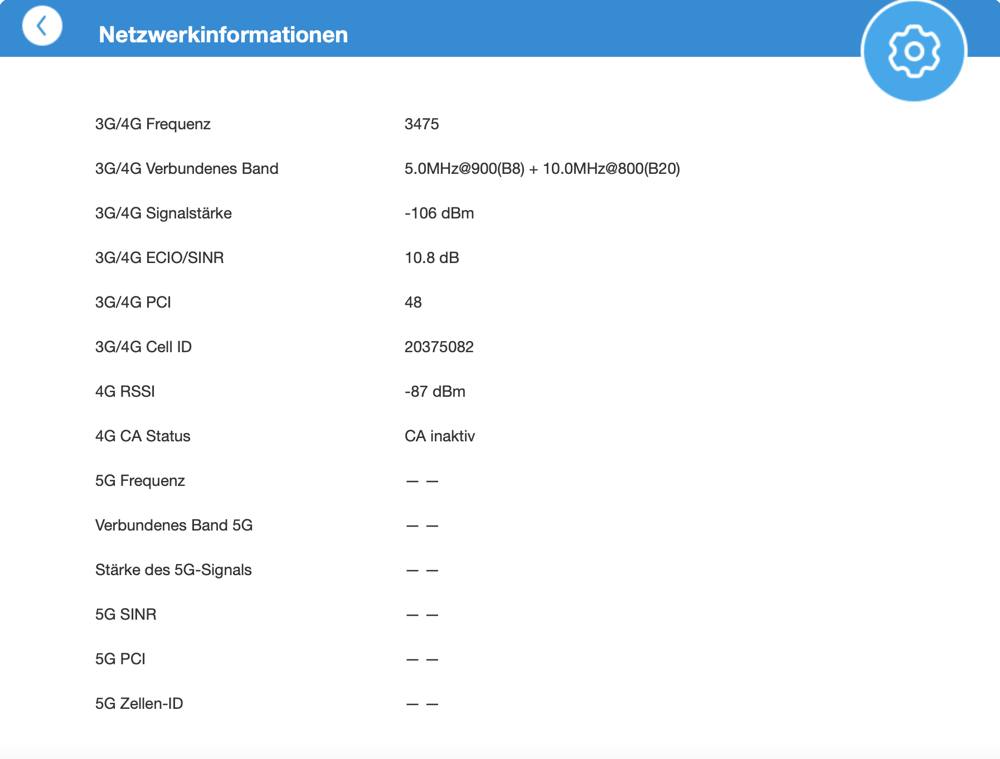
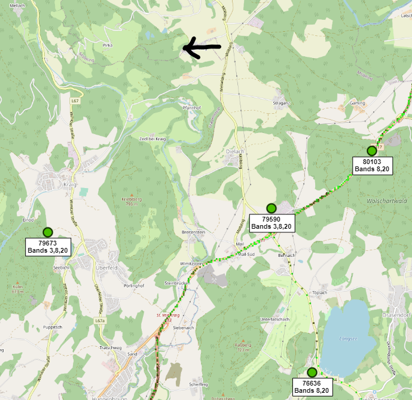
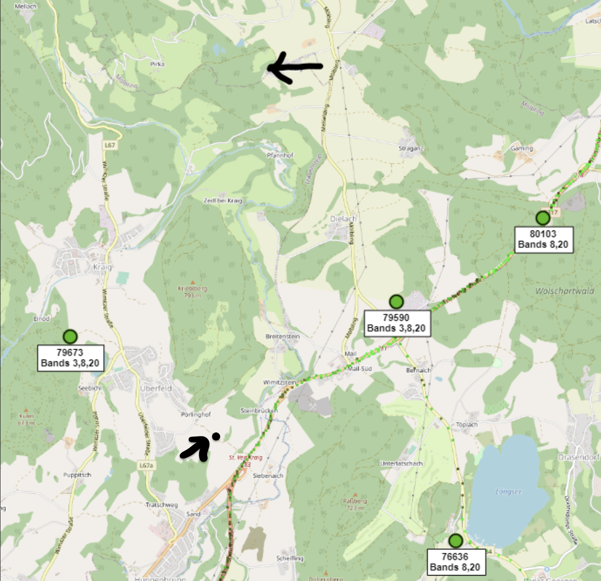

Liebe Magenta Community!
Ich habe bereits vor ungefähr 4 Monaten im Dezember einen Thread veröffentlicht, in dem ich geschrieben habe, dass wir jetzt daheim einen neuen Vertrag haben und dazu die Wlan-Box von ZTE (MC801A). Aufgrund diverser Probleme mit dieser (Wurde auch eigeschickt - keine Fehlfunktionen laut "Prüfer"), habe ich mir damals dann den Netgear Nighthawk LAX20 bestellt - funktioniert auch soweit. Dieser kann allerdings kein Carrier Aggregation (Frequenzbündelung - sofern ich das richtig verstanden habe) und der MC801A eben schon.
Das hat mir keine Ruhe gelassen und ich habe wieder mal den MC801A angeschlossen und die SIM-Karte eingesteckt. Und siehe da - Mehr als die doppelte Geschwindigkeit vom LAX20 (LAX20: Down: ca. 40 mbit Up: ca. 7 mbit/ MC801A: Down: ca. 90 mbit Up: ca. 12 mbit). Allerdings sehr instabil, funktioniert meistens nur 10 min bis 1 Stunde, dann ist das Internet ganz weg (Neustart bringt meistens auch nichts. Nun zu meiner Frage:
Ich verstehe nicht, wieso, wenn beide Router am selben Standort stehen der LAX20 einen dbm-Wert von -60 bis -75 hat und der MC801A immer über -100 bis hin zu -118 dbm. Es ist auch egal wo ich den MC801A im Haus positioniere, die Werte sind immer gleich schlecht. Ich würde das so gerne in den Griff bekommen da bei uns zu Hause "viel" Bandbreite benötigt wird, aber ich weiß langsam nicht mehr weiter. Ich möchte auch nicht umbedingt eine "Außenantenne" kaufen, da das die baulichen Maßnahmen des Hauses nicht wirklich zulassen.
Ich hoffe mit kann jemand helfen das Problem zu lösen das muss doch irgendwie funktionieren, danke im Voraus.
")
Hey
@rvspvct
Unterschiedliche Bänder haben unterschiedliche Eigenschaften in Bezug auf die Reichweite (höhere Megaherz, geringere Reichweite).
Zudem ist der ZTE Router ein 5G Router. Sind diese Empfangswerte ggf. von einem 5G Band? Das n78 (3500MHz) 5G Band hat im Vergleich zu LTE B20 oder B8 eine geringere Reichweite. Außerdem könnte das 5G Band auch von einem anderen Sendemasten kommen.
Der Netgear LAX20 kann Carrier Aggregation (CA) mit maximal zwei Bändern. Der ZTE sollte hingegen auf jeden Fall vier Bänder gleichzeitig nutzen können, und auch ein 5G Band.
Könntest du Mal beim ZTE die detaillierteren Werte Posten, welche auf der Verwaltungsseite (
http://192.168.0.1
) unter "Erweiterte Einstellungen" (blaues Zahnrad) -> "Andere" -> Netzwerkinformationen" zu finden sein sollten?
LG NTM
Hallo
@NTM
, danke für die Antwort. 5G ist bei mir daheim noch garnicht abgedeckt, im Shop meinte sie nur wir sollen es mal probieren und es wäre zukunftssicher (da das 5G Netz ja immer weiter ausgebaut wird). Ist auch nicht so das Problem, mir reicht zurzeit auch die LTE Leistung und wenn dann mal 5G geht - auch super. Also meine Empfangswerte beim ZTE basieren nur auf LTE bzw. LTE+ (Auch in Einstellungen am Router ausgewählt: Netz: Ausschließlich 4G). Anbei die Fotos. Hab auch noch einen Screenshot der Netzwerkinformationen gemacht.
LG


Hey
@rvspvct
Der Sendemast mit dem sich der ZTE hier verbindet steht beim ÖAMTC Fahrtechnik Zentrum. Dieser sollte eigentlich auch Bänder 20, 8, und 3 aussenden. Spannenderweise verwendet der Router nur B20 und B8, wobei wenn bereits diese Bänder weniger als -100 dBm haben, wird das Band 3 noch deutlich schlechteren Empfang haben.
Hier ein Screenshot von den Sendemasten in der Gegend.

Beim schwarzen Pfeil ist noch ein Sendemast, welcher noch nicht auf
cellmapper
erfasst wurde.
Möglicherweise verbindet sich der Netgear mit einem anderen Sendemast, welcher eigentlich näher wäre. Vielleicht gibt es bei dem Gerät auch die Möglichkeit solche Werte auszulesen, wie beim zweiten Screenshot, wobei ich leider nicht genau sagen kann, wo Netgear diese Angaben auf deren Verwaltungsseite verstecken könnte.
LG NTM
Danke
@NTM
Wie das beim Netgear funktioniert hab ich auch noch nicht rausgefunden, aber es muss doch eine Möglichkeit geben den ZTE zum laufen zu bringen. Ich werd heute mal im Netgear ein bisschen nachforschen.
Ich habe anbei noch einen Sendemast eingezeichnet (Quelle: Senderkataster.at). Dieser Masten soll laut Angaben LTE sowie 5G können, allerdings habe ich keine Daten des Mastens und weiß auch nicht welchem Anbieter dieser gehört.

{kind=link}
{kind=link}
{kind=link}